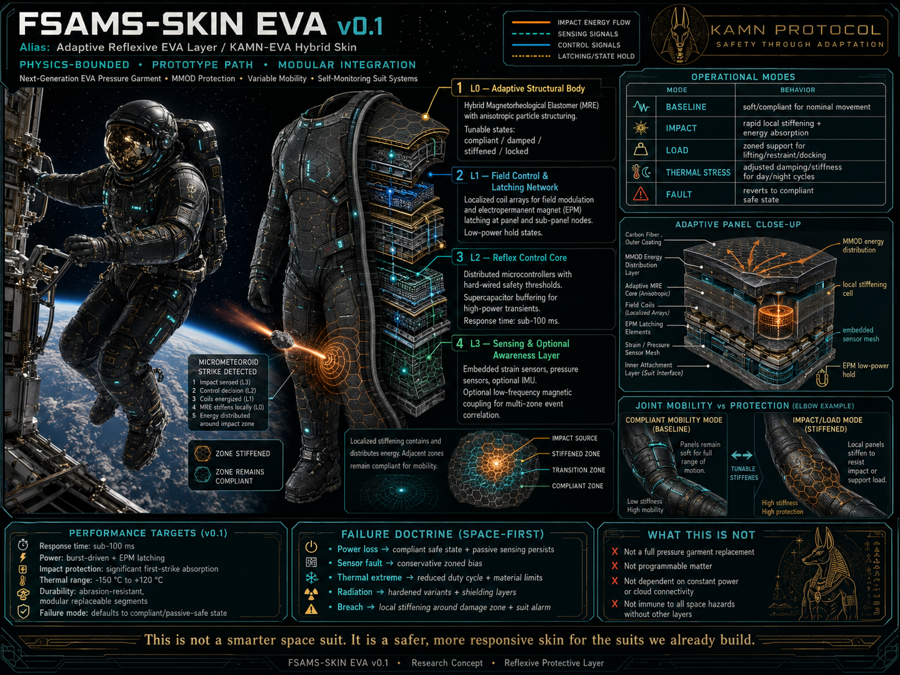

Illustrated research concept
FSAMS-SKIN EVA v0.1
Purpose
An EVA-specific illustrated adaptive protective surface proposal. A separate archived industrial machine-skin text predates this review; applicability of that text to EVA is not established.

Evidence and limits
The EVA artwork resolves the existence of an EVA-specific concept, not qualification or lineage of the industrial source. No tested impact protection, response time, thermal durability, pressure-garment capability or aerospace readiness. Displayed targets and safety claims are illustrative.
Next review gate
Qualified materials and spacesuit review, starting with non-life-critical comparisons against passive material baselines.
Recovered illustration from Mr. Peloquin's collaborative design collection. Specific original artwork authorship and independent review are unverified.